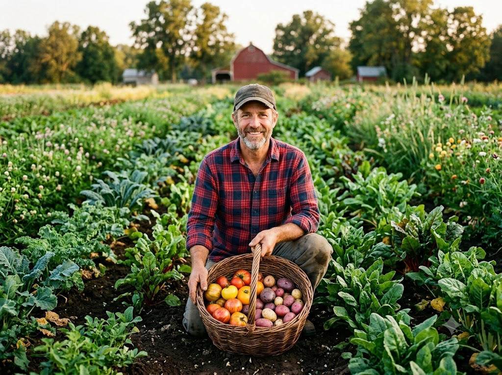
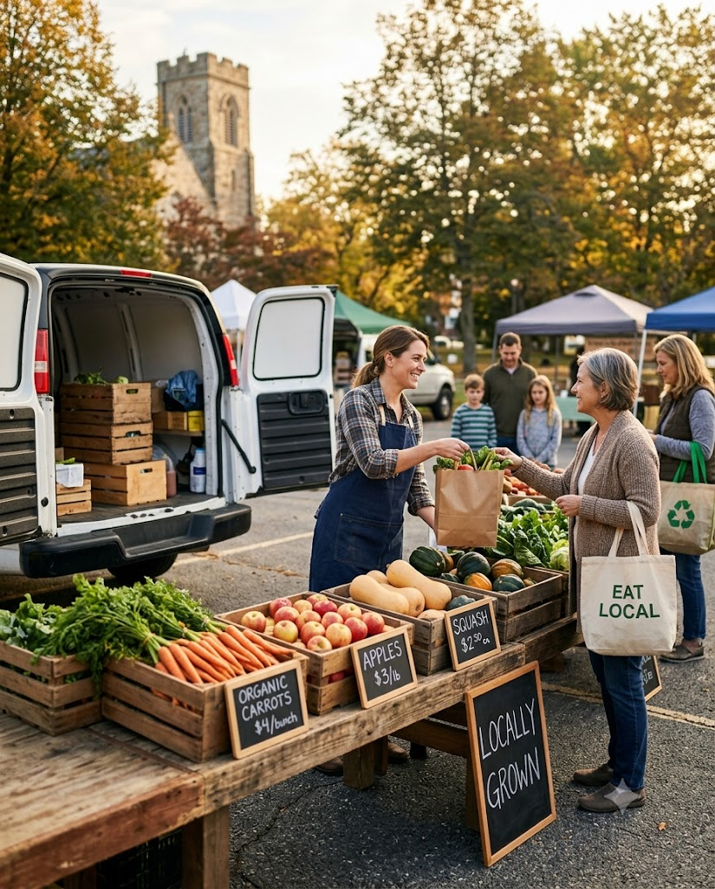
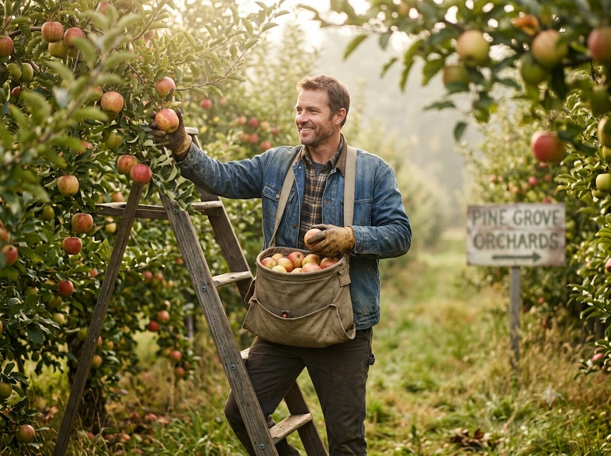
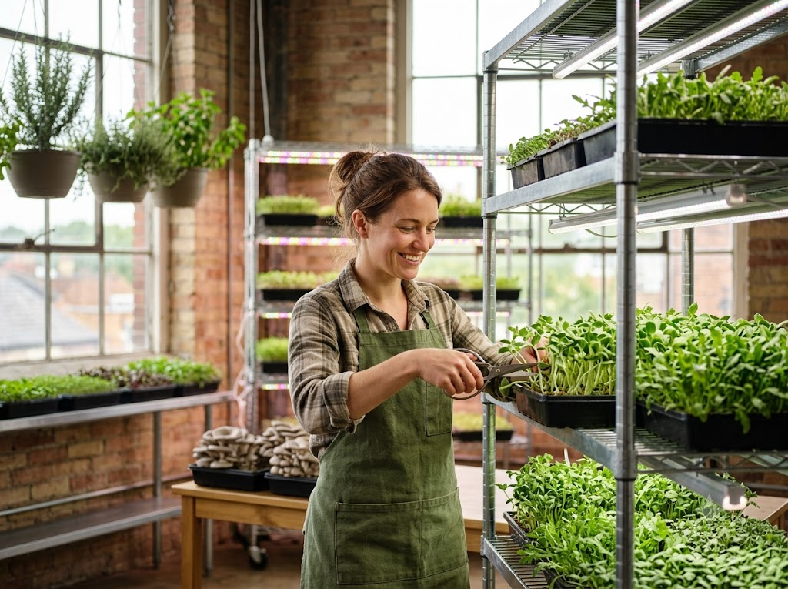
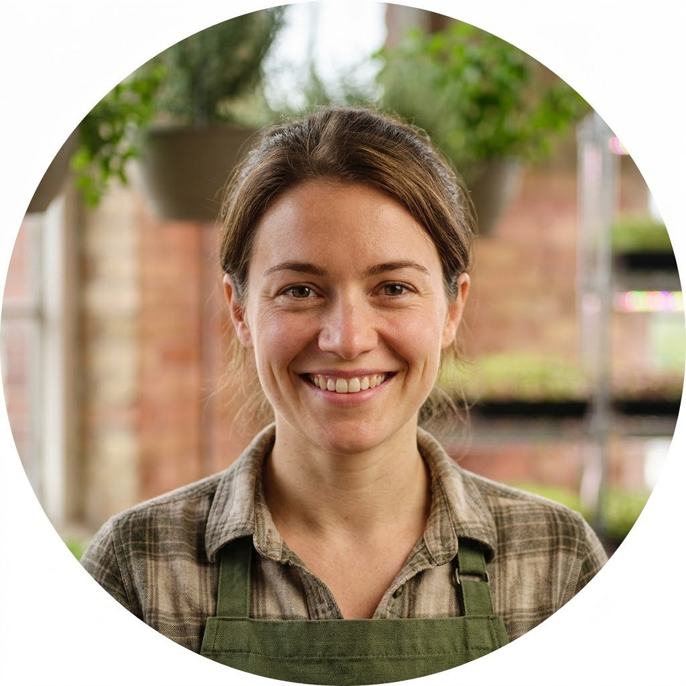
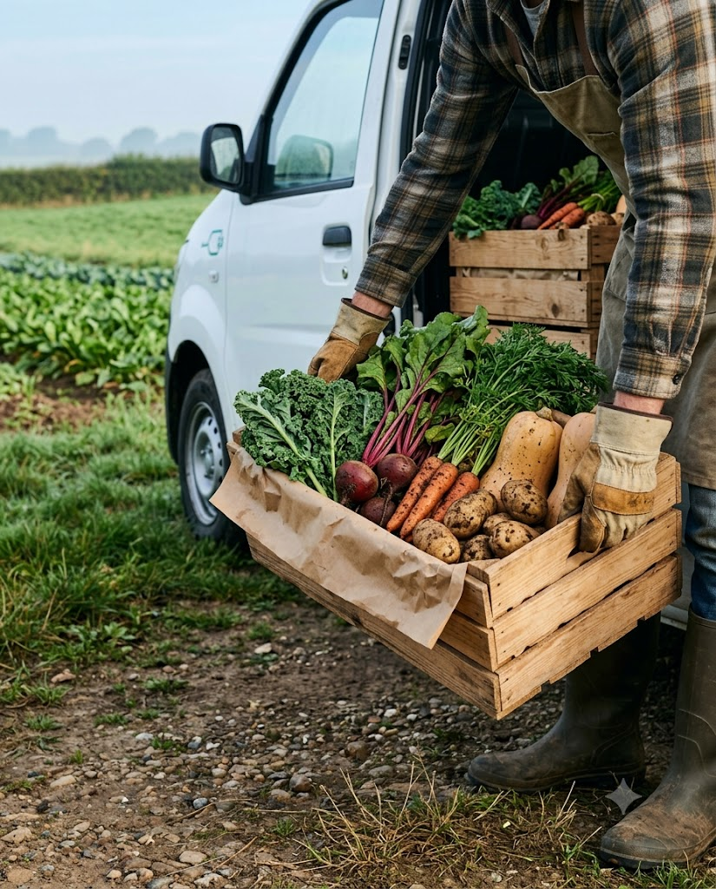

Root vegetables
Green Valley Acres
Marcus T. & family
Regenerative growers of heirloom tomatoes, potatoes and greens since 2010.
Shop their harvestFarmCircle is a member-owned grocery co-op that connects neighbors directly with the small farms growing their food.

Founded in 2019 by 6 farms & 40 families
Small farms were growing incredible food but losing money to middlemen. Neighbors wanted that food but couldn't make every Saturday market. So we built a circle between them.
The first 40 member households pick up boxes from a church parking lot.
Members vote to add home delivery with a shared, low-emission fleet.
Still member-owned, still local, and still returning 80% of every dollar to growers.
"To keep small farms thriving by giving every neighbor a simple, fair way to eat fresh, local food all year long."
Growers set their own prices and receive 80% of every sale, paid weekly.
Every item is labeled with the farm, the field and the day it was harvested.
We only partner with farms using regenerative, low-input growing practices.
One member, one vote. Members and farmers decide together how the co-op grows.
Selling through FarmCircle gives growers the stability that wholesale markets rarely offer.
Farmers keep 80% of sales and are paid every Friday, not on 60-day terms.
Member subscriptions let farms plan plantings before the season starts, so less goes to waste.
We handle cold storage, packing and delivery so farmers can stay in the field.
1% of every order funds equipment grants and training for new and young farmers.
Three of the family farms that grow for FarmCircle, all within 25 miles of your door.

Regenerative growers of heirloom tomatoes, potatoes and greens since 2010.
Shop their harvest
Crisp apples, pears and summer berries grown with natural pest control.
Shop their harvest

Ana R., founderMicrogreens, herbs and mushrooms grown in repurposed city spaces.
Shop their harvestEvery order adds up. Here's what FarmCircle members and farmers have achieved since 2019.
"Selling through the co-op means we plan our season with confidence and waste almost nothing we grow."
Our sourcing standards are written and voted on by members. Every partner farm is visited and reviewed each season.

Average food miles: 14 miles
Here's what members tell us they can't get anywhere else.
Harvested to order, so produce lasts longer and tastes like it should.
Shop one-off or subscribe. Swap items, skip weeks or pause anytime.
No markups for shelf space or ads. Members also get 10% off weekly boxes.
Free delivery on orders over $35, twice a week, right to your doorstep.
Members vote on new farms, products and how the co-op spends its surplus.
Surplus produce goes to local food banks, never to landfill.
Fill your cart with this week's harvest, or become a member and get a fresh box at your door every week.